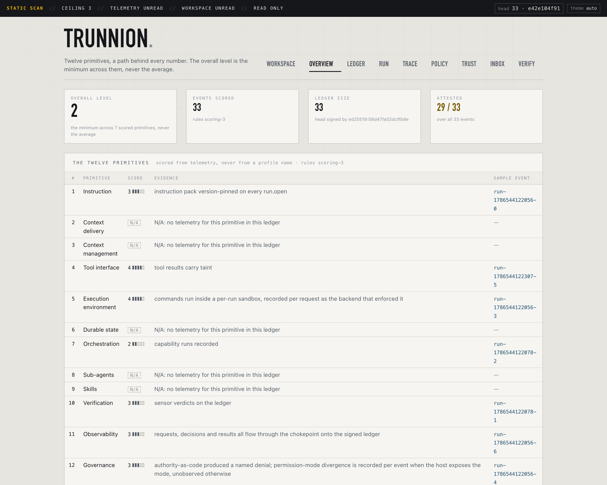
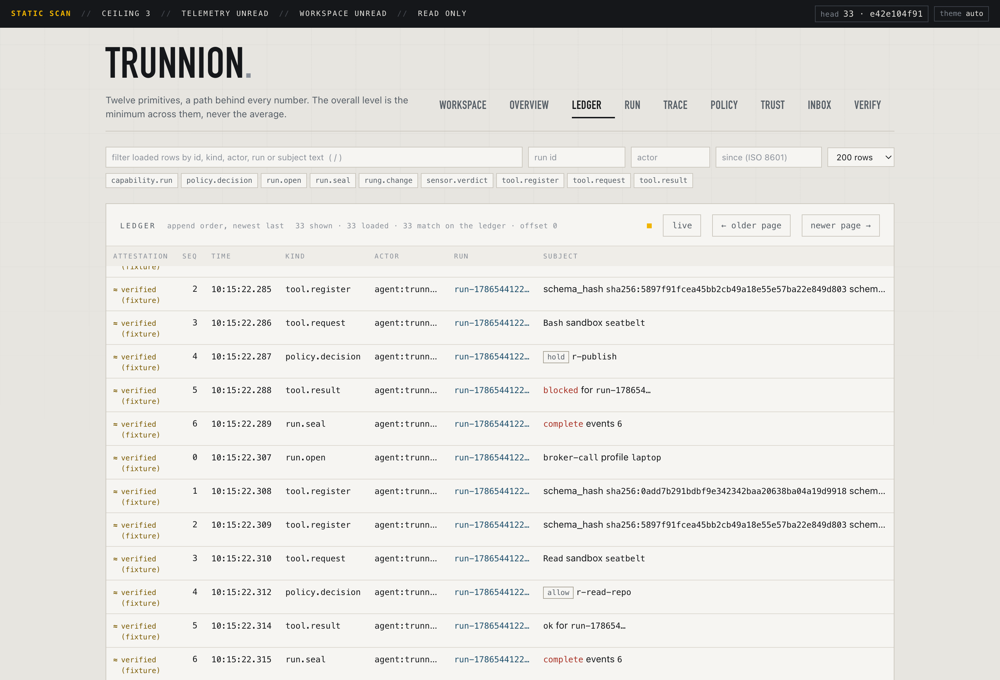
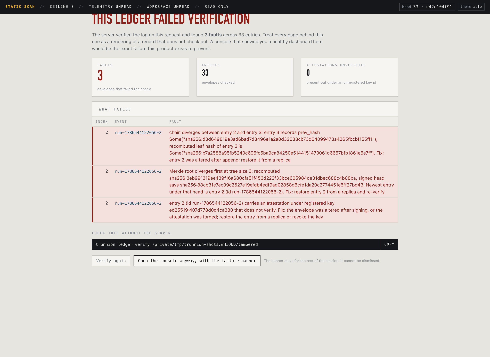

A control plane that sits between your AI agents and everything they can touch, records every decision on a tamper-evident log, and scores how well it is doing that from its own telemetry rather than its own documentation.
An agent is two things: a model, and the harness around it. The model writes the code. The harness decides whether the command it just proposed is allowed to run, what credentials it can see, what happens when a check fails, and whether anyone can reconstruct all of that afterwards.
The harness half is still hand-assembled at every company that needs one: a permissions file here, some logging there, an approval step that exists in a Slack thread. It works until someone asks a question it cannot answer.
Every model call goes through one gateway. Every tool call goes through one broker that consults a policy and names the rule behind each decision. Both write to an append-only cryptographic log that a third party can verify offline, without trusting the binary that wrote it.
Solid lines are the request path. Dotted lines are the record: nothing is trusted that is not on it, and the score at the end is derived from that record rather than from what any config file claims.
One sitting, start to finish. Every command and every line of output below came from a real run on a laptop. Nothing is a mock-up.
{{ note }}
cargo build, then zsh docs/proof/08-run.sh exercises every layer and reproduces the full scorecard. Each slice carries its own proof document in docs/proof/, produced by running the thing rather than reasoning about it.
Capability, effect, rung and gate are one idea in four words. docs/GLOSSARY.md defines every term, grouped by what you are trying to work out, and ends with the ones that are declared and not yet running.
{{ c.body }}
{{ c.edge }}
Every rule, message and capability below is the tracked config/policy.json on the laptop profile.
{{ sim.message }}
{{ sim.after }}
Every run writes the same skeleton, whatever it did. The denied run carries one more event, a rung.change between the decision and the result: a denial costs the capability a rung, and the demotion sits next to the decision that caused it rather than being inferred later.
{"capability":"shell.exec","effect":"write.local",
"gate":"post",
"identity":{"id":"user:mariano@local","source":"local"},
"message":"This command is destructive and its
capability's rollback handle cannot recall it. …",
"request":{"args_hash":"sha256:2f3b9457…",
"target":"rm -rf /","tool":"Bash"},
"rule":"r-destructive-shell",
"rung":"autonomous",
"verdict":"deny"}
{"profile":"laptop",
"policy_version":"sha256:b1d79eab…",
"instruction_version":"sha256:e087ac11…",
"settings_hash":"sha256:5a22b9dd…",
"permission_mode":"bypassPermissions",
"diverged":["host_permissions.permission_mode"]}
That last pair is worth slowing down on. This run happened inside a session running in bypass mode while the tracked settings declare no default mode. The two disagree, and the event says so, on the event, at the time. Outside such a session the field reads "unobserved" and nothing is reported as diverged, because an absent signal is written down rather than guessed into a value.
Export one event as a bundle and check it somewhere else: one envelope, its index, a three-element proof and one signed head. That is the whole evidence package for “this decision was on the log, in this position, at this size.”
$ trunnion ledger prove /tmp/demo/ledger 4 > bundle.json $ trunnion ledger verify-inclusion bundle.json ledger.pub inclusion verified: entry 4 under signed head size 15
One missing layer is what an attacker or an auditor finds. Nine strong layers and no record of what happened is a weak system. Layers 10, 11 and 12 are the trust layers, the ones nobody builds, and because the score is a minimum they are usually the ones setting it.
{{ prim.means }}
{{ prim.wrong }}
{{ prim.why }}
The table is produced by trunnion score reading a ledger that exercised the layers, not by reading a file. The scoring rules are data, so anyone holding an exported ledger re-derives the same twelve numbers without trusting the binary. Adding a scoring rule alone changes nothing, because the scorer reads telemetry: the number follows the record, including when the record is disappointing.
Served by the same binary from the same process. No second service, no build step, no package manager: the assets are hand-written HTML, CSS and ES modules embedded at compile time, and the logo travels as a data URI. Nothing is fetched from any host, which is what lets the air-gap claim survive having a UI at all.



{{ tab.caption }}
The API is read-only by decision. It cannot approve, promote, demote or append, because a UI that can move a rung is an authority surface and the laptop profile has no identity story for one. It binds loopback by default. Not built yet: no approval inbox, no inclusion-proof view, no sensor board, no anchoring view. Live update is a poll, not a stream.
{{ m.what }}
Only laptop runs. It is what the tracked policy declares, what the template ships, and what every proof document exercises. The other two rows are the design.
No anchored head, no drift report over the whole profile, and no isolation backend other than seatbelt, because none of those is built. The glossary ends with the full list of terms that are declared and not yet running, and each proof document closes with its own section on what is still a guide.
The scorer reads what is running and never the profile name. Seatbelt scores 4 on execution environment from a sandbox field observed on every tool request, not from the policy's own claim; a host with no sandbox-exec records none and the isolation claim is honestly unmet rather than silently bypassed.
$ trunnion template init templates/laptop ~/my-harness template validates: profile laptop, 5 capabilities, 8 rules, 3 providers, 12 scoring rules, 2 sensors wrote config/policy.json wrote config/providers.json wrote config/scoring.json wrote instructions/pack.md wrote config/sensors/… wrote config/actor-key.seed (mode 0600) harness initialised, signing as ed25519:86c50d22…
The signing key is generated per install from OS entropy, so no two harnesses share an identity and the template ships no key material at all. The bundle validates as a whole before a single file is copied, so a refused init leaves no half-written harness.
cargo build cargo test zsh ci/run.sh # fmt, clippy as errors, offline suite, # policy parity, sensor liveness